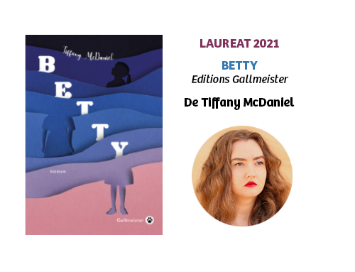
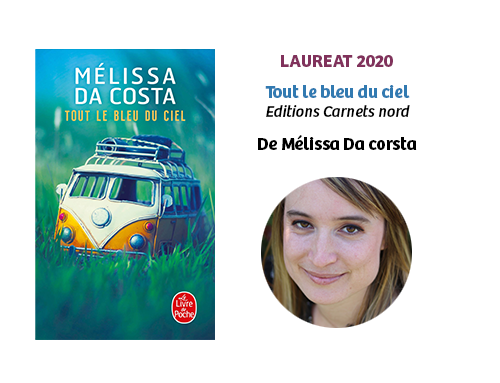
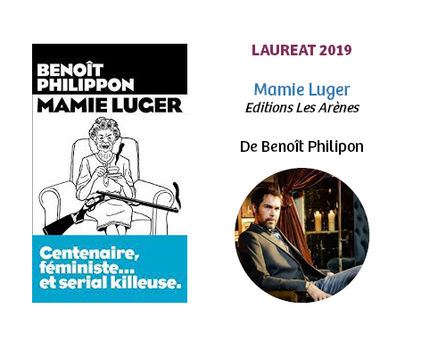
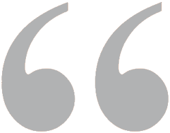
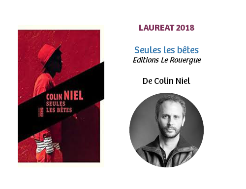
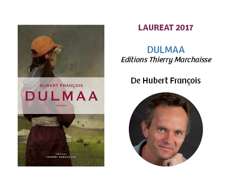
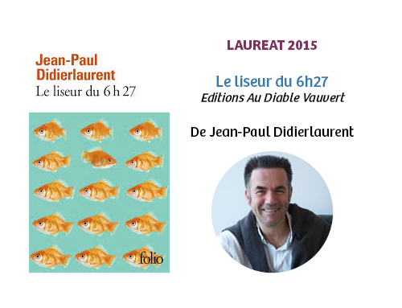
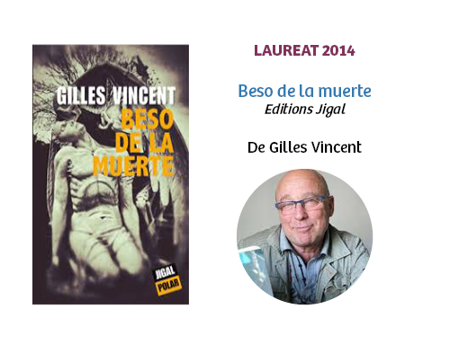
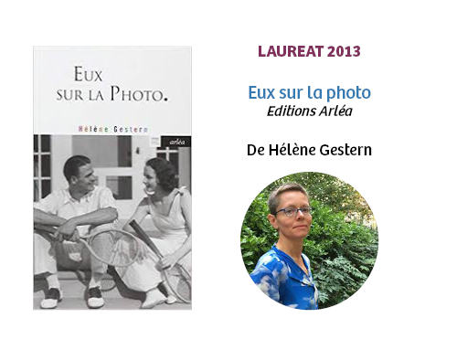

Je tiens à vous remercier pour ce merveilleux prix. C’est un honneur ! Ma mère Betty et moi éprouvons toutes les deux beaucoup d’amour et de reconnaissance pour votre soutien !
Regarder l’interview de Tiffany McDaniel

Que dire à part, merci ! Je sais que mon roman n’était pas le plus facile à lire ! Entre le nombre de pages plutôt conséquent, les soucis pour trouver des exemplaires à cause du confinement et la rupture de stock momentanée. Mais je suis ravie de voir que vous vous êtes tous accrochés et que mon roman vous a plu !
Accéder au replay de la remise de prix


J'ai eu le grand honneur de recevoir le Prix du Roman Cezam. C'est un prix assez dingue dont je ne dirai jamais assez de bien. Plus de 2000 votants à travers la France, une équipe en or qui m’a trimballé de médiathèques en lycées professionnels pour rencontrer des super lecteurs passionnés. Une année de virée qui se clôture par ce beau prix, et une tournée qui se poursuit : après Nancy, Le Mans, Angers, Nantes, Clermont, Paris. Bref, Metallica n'a qu'à bien se tenir, une tournée Cezam, c'est une tournée de rock star. Un grand merci aux lecteurs à travers la France. (...)
Lettre à venir

Un an déjà, le temps est passé très vite depuis la remise du prix Cezam, à laquelle je n’avais malheureusement pas pu participer. Vous écrire aujourd’hui, pour le lancement de la nouvelle édition, c’est se souvenir de l’aventure qu’a été pour moi ce prix si particulier. Je vous l’avoue, avant d’être sélectionné, je ne connaissais le prix Cezam que de nom, je n’avais qu’une vague idée de ce qu’il représentait. Quand mon éditrice m’en parlé, ma première surprise, ça a été le nombre de lecteurs qu’elle m’annonçait : plus de 2000 ! Je n’en revenais pas, qu’un prix de cette ampleur n’ait pas plus de renommée auprès du grand public. (...)
Lire la lettre en totalité :
Lettre Colin Niel lauréat 2018

C’est un grand plaisir de revenir vers vous, un an après. Vous le savez si vous étiez là, j’ai vécu la cérémonie avec beaucoup d’émotion l’année passée, et j’en garde un magnifique souvenir. Cette récompense, mais aussi toutes les rencontres qui l’ont accompagnée, m’ont énormément apporté : seuls les lecteurs, et peut-être le temps qui passe, peuvent dire d’un livre qu’il est réussi, ou pas. Vos votes, et l’ensemble de vos réactions au fil des mois, m’ont poussé à endosser un statut – auteur de roman - avec lequel je n’étais guère à l’aise. Quand mon prochain roman sortira, vous y serez pour quelque chose. (...)
Lire la lettre en totalité :
Lettre Hubert François lauréat 2017

Lorsqu’un de mes livres est traduit à l’étranger, je me sens toujours quelque peu désorientée du sort de ce roman. Je veux dire qu’en Italie mon livre parle ma langue et mes lecteurs m’écrivent pour me manifester leur affection. C'est un peu comme être chez eux, entre amis. Mais quand le livre sort des frontières nationales, il devient presque un saut dans l'obscurité, un saut passionnant dans le noir. Parce qu'une histoire traduite non seulement commence à parler une autre langue mais trouve de nouveaux lecteurs. (...)
Lire la lettre en totalité :
Lettre Valentina d'Urbano lauréat 2016

Si l'on me demande ce que je retiens du prix Cezam, les premières choses qui me viennent à l'esprit sont d'abord des endroits. Là, une médiathèque, ici, une entreprise, ailleurs, un hôpital, plus tard, une chambre d'agriculture, plus loin, une préfecture, là-bas un café. Dans des villes comme Angers, Nantes, Mulhouse, Strasbourg, Colmar, Bourg-en-Bresse, Nancy, Lorient, Paris, Annecy ou Lyon. Alors, avec ces villes et ces endroits, surgissent à mon esprit les visages. Ceux de Catherine, Marie, Joëlle, Florence, Jeanne, Nassera, Yann, Dominique, Denise, Michel et tant d'autres dont j'ai oublié le prénom et qui sont le cœur du prix. (...)
Lire la lettre en totalité :
Lettre Jean Paul Didierlaurent lauréat 2015

Il faut plus de vingt ans, que dis-je, trente ans au moins pour collecter les rencontres précieuses. Noter dans son carnet les noms et les prénoms de celles et ceux dont on se souvient longtemps. Des visages, des voix, des sourires qui ne parviennent à s'effacer... Aussi, ce soir, orphelin de vous tous, loin du Nord qui m'a vu naître et grandir, ce soir, en manque de cette soirée d'applaudissements, de reconnaissance, de bienveillance aussi, ce soir me reste le souvenir indélébile de vos silhouettes... (...)
Lire la lettre en totalité :
Lettre Gilles Vincent lauréat 2014

Vous êtes sélectionnée pour le prix Cezam, c'est une excellente nouvelle !" m'a annoncé mon éditrice, un jour. J'ignorais encore à quel point elle aurait raison. Moi qui aime les voyages, j'ai voyagé. Et pas seulement dans les trains. J'ai voyagé dans des lieux, des paysages, et surtout parmi les mots de tous ceux qui m'ont accueillie. Ils n'avaient pas le même âge, pas le même métier, et les raisons qui les menaient à la lecture étaient multiples : mais tous partageaient ce goût, cette ferveur, cette envie de se réunir autour de quelque chose qui allait les faire s'évader, réfléchir ou rêver, les livres. (...)
Lire la lettre en totalité :
 Se connecter
Se connecter Nous trouver
Nous trouver Nous contacter
Nous contacter